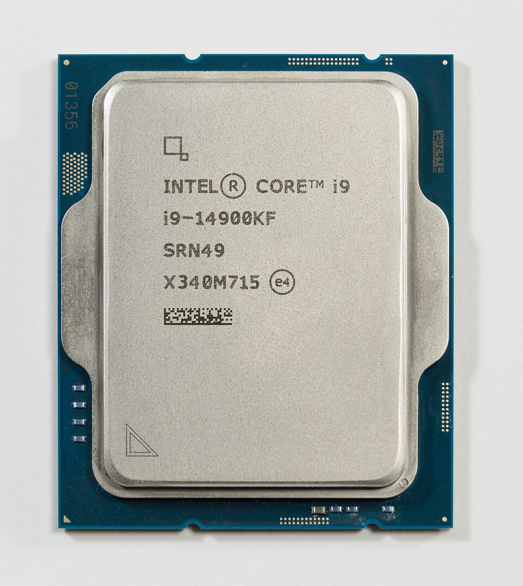

Клієнтські обчислення (Client Computing Group)

Найбільший за виручкою напрям корпорації: процесори Intel Core для ноутбуків і настільних комп'ютерів, платформи для виробників обладнання, бездротові рішення
Зв'язок з державними органами: Бюро промисловості та безпеки (BIS) Міністерства торгівлі США - експортний контроль; Федеральна торгова комісія США (FTC) та Європейська комісія - антимонопольний нагляд за ринком процесорів